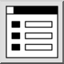

Thanh công cụ / Biểu tượng:

Hiển thị hoặc ẩn widget neo trình chỉnh sửa thuộc tính để xem và chỉnh sửa các thuộc tính của các đối tượng được chọn.
Nếu một đối tượng đơn được chọn, tất cả các thuộc tính của nó được hiển thị, bao gồm cả hình học của nó (ví dụ điểm đầu và điểm cuối của một đường thẳng hoặc tâm và bán kính của một đường tròn). Nếu nhiều đối tượng được chọn, trình chỉnh sửa thuộc tính hiển thị các thuộc tính chung cho tất cả các đối tượng được chọn. Một thuộc tính có các giá trị khác nhau trong lựa chọn được hiển thị dưới dạng một ô hỗn hợp.
Để thay đổi một thuộc tính, nhập một giá trị mới vào ô tương ứng trong trình chỉnh sửa thuộc tính và xác nhận đầu vào của bạn (Enter hoặc Tab).
Thay đổi được áp dụng ngay lập tức cho tất cả các đối tượng được chọn. Các thuộc tính hình học, các thuộc tính như lớp, màu, độ dày đường và loại đường, cũng như các thuộc tính tùy chỉnh có thể được chỉnh sửa theo cách này.
Nếu không có gì được chọn, trình chỉnh sửa thuộc tính trống.